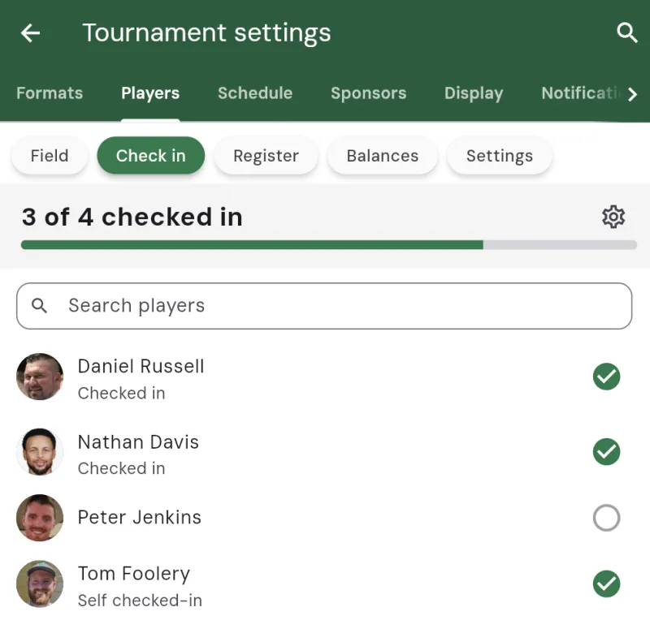
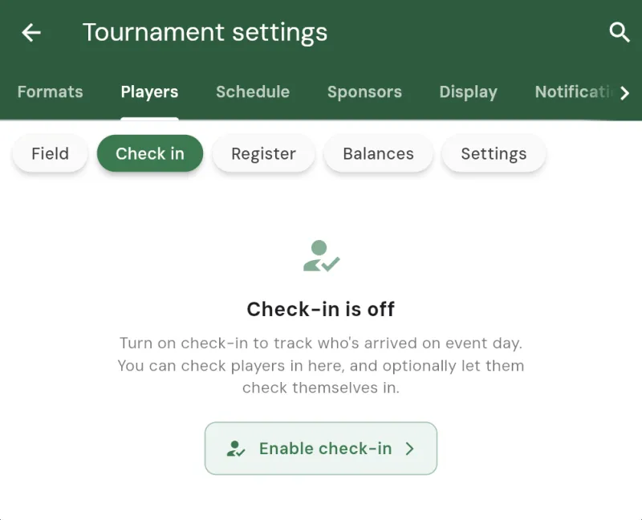
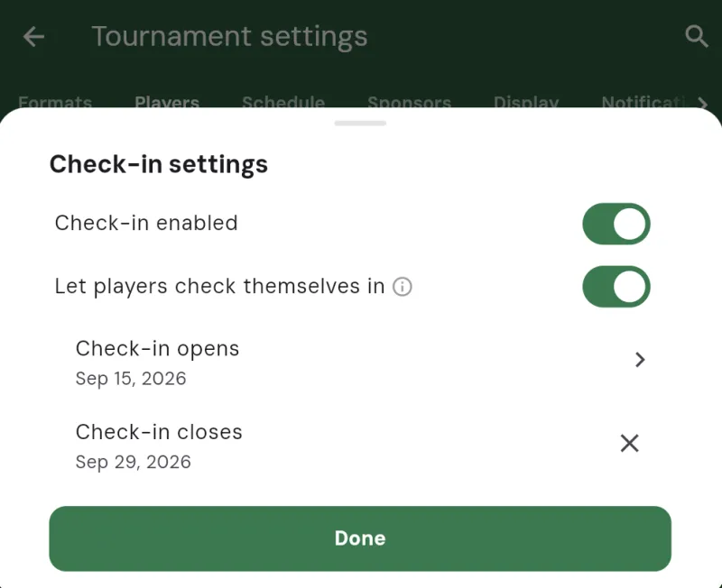
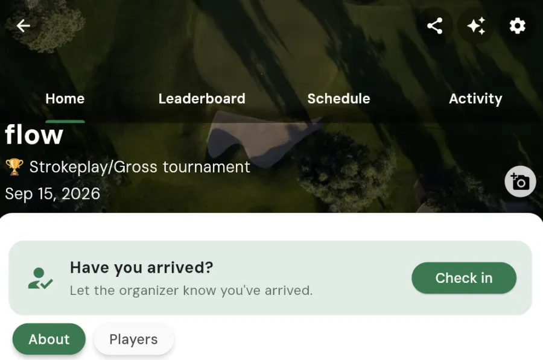
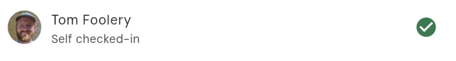

Checking Players In
Player check-in gives you a simple way to see who has actually turned up on event day. Instead of hunting around the clubhouse or working off a paper list, you get a live count of arrivals and a tick next to every player who’s here. You can check people in yourself as they walk up, or let players check themselves in from their phones.

Why use check-in
On the morning of a shotgun start or a busy tee sheet, the first question is always the same: is everyone here? Check-in answers that at a glance. It helps you:
- See a running count of how many players have arrived out of your full field
- Spot no-shows early, while there’s still time to fill a group or adjust pairings
- Avoid holding up the start waiting on someone who never came
- Share the load with your other admins, since anyone helping run the event can check players in too
Turning check-in on
Check-in is off by default, so it only appears when you want it. To turn it on, open your tournament’s settings, go to the Players tab, and tap the Check in chip.
The first time you open it, you’ll see a short prompt explaining what check-in does with an Enable check-in button. Tap it, and the check-in settings will open so you can set things up.

Check-in settings
The settings sheet is where you decide how check-in works for this event. There are a few options:
Let players check themselves in
With this turned on, players see a button in the app to check themselves in once they’ve arrived. This is the easy option for large events, since players do the tapping and your count fills in on its own. You can still check anyone in yourself, so it’s never all-or-nothing.
Leave it off if you’d rather be the only one marking arrivals, for example when a starter is checking players in at the first tee.
The check-in window
When self check-in is on, you can set the days it’s available with a Check-in opens and Check-in closes date. Players can only check themselves in during that window. If you don’t set custom dates, the window defaults to the day of the event, so self check-in is simply available on event day.

How players check themselves in
When self check-in is open, every player on the roster sees a Have you arrived? card on the tournament’s home screen with a Check in button. Tapping it asks them to confirm they’ve actually arrived at the course, then marks them as here.
Once a player has checked in, the card turns into a simple “Checked in” confirmation. Players can’t un-check themselves, so an accidental tap won’t leave your count wrong. If someone checks in by mistake, an admin can undo it (see below).

Checking players in yourself
Back on the Check in tab, you’ll see your whole field with a running “X of Y checked in” count and a progress bar across the top. Each player has a circle on the right that fills in with a green tick when they’re checked in.
To check someone in, just tap their row. Tap it again to undo. There’s a search box so you can jump straight to a name in a large field. Players who checked themselves in are labelled “Self checked-in” so you can tell at a glance who tapped in on their own versus who you checked in.
You can also check a player in from their profile in the tournament: open the player, and you’ll find a Check in (or Undo check-in) action there too.

Keeping an eye on arrivals
The count and progress bar at the top of the Check in tab update live as players arrive, whether they checked themselves in or you did it for them. When the number matches your field, you know everyone’s on site and you’re clear to get underway. If a couple of names are still unchecked as your start time approaches, you know exactly who to chase.
Every check-in is also recorded in the tournament’s admin activity, so you and your fellow admins have a clear record of who arrived and when.